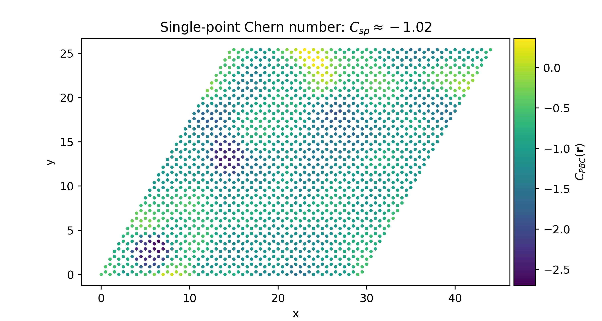

Welcome to StraWBerryPy!¶
StraWBerryPy (Single-poinT and local invaRiAnts for Wannier Berriologies in Python) is a Python package calculating topological invariants for non-crystalline 2D topological insulators. In the supercell framework the single-point formulas for the Chern number [Ceresoli-Resta] and the single-point spin Chern number [Favata-Marrazzo] are implemented. It is also possible to calculate the local Chern marker within periodic boundary conditions [Baù-Marrazzo]. In addition, StraWBerryPy can handle finite systems (such as bounded samples and heterostructures) and compute the local Chern marker [Bianco-Resta]. The code provides dedicated interfaces to tight-binding packages PythTB and TBmodels.
Quick installation¶
Clone this Github repository and install using the following instructions:
git clone https://github.com/strawberrypy-developers/strawberrypy.git
cd strawberrypy
pip install .
Quick start¶
Here, a quick example for calculating the single-point and PBC local topological invariant in the supercell framework for the Haldane model in presence of Anderson disorder. We can define the periodic model with either TBmodels or PythTB, which is then passed to the Supercell class (when defining the supercell, we also need to specify the dimension of the supercell). Then, we can add some on-site random disorder and finally call the methods to compute the single-point and local invariants.
import numpy as np
from strawberrypy import *
# Define the PBC model
pbc_model = example_models.haldane_tbmodels(delta = 0.3, t = 1, t2 = 0.15, phi = np.pi / 2, L = 1)
# Build the supercell of the model
model = Supercell(tbmodel = pbc_model, Lx = 30, Ly = 30, spinful = False)
# Add on-site Anderson disorder
model.add_onsite_disorder(w = 5)
# Evaluate the single-point Chern number
sp_inv = model.single_point_chern()
print("Single-point invariant: {}".format(sp_inv['symmetric']))
# Evaluate the PBC local Chern marker
pbclcm = model.pbc_local_chern_marker(macroscopic_average = True, cutoff = 2)
{kind=link}
